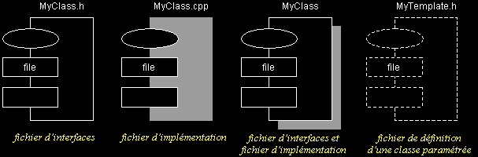
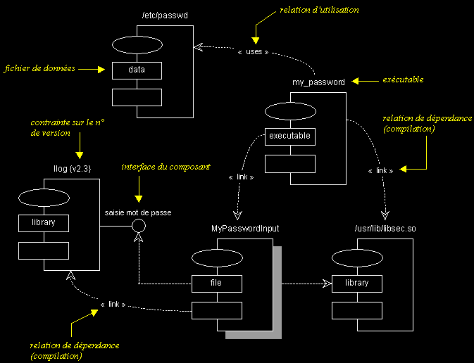
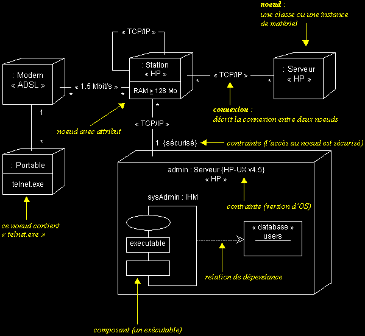

|
|
|
Les vues statiques d'UML (suite...)
DIAGRAMMES DE COMPOSANTS ET DE DEPLOIEMENT
q
Diagramme de composants
- Les diagrammes de composants permettent de décrire l'architecture physique et statique d'une application en terme de modules : fichiers sources, librairies, exécutables, etc.
Ils montrent la mise en oeuvre physique des modèles de la vue logique avec l'environnement de développement.
- Les dépendances entre composants permettent notamment d'identifier les contraintes de compilation et de mettre en évidence la réutilisation de composants.
- Le composants peuvent être organisés en paquetages, qui définissent des sous-systèmes. Les sous-systèmes organisent la vue des composants (de réalisation) d'un système. Ils permettent de gérer la complexité, par encapsulation des détails d'implémentation.
Modules (notation) :

Diagramme de composants (exemple) :
q Diagramme de déploiement
- Les diagrammes de déploiement montrent la disposition physique des matériels qui composent le système et la répartition des composants sur ces matériels.
- Les ressources matérielles sont représentées sous forme de noeuds.
- Les noeuds sont connectés entre eux, à l'aide d'un support de communication.
La nature des lignes de communication et leurs caractéristiques peuvent être précisées.
- Les diagrammes de déploiement peuvent montrer des instances de noeuds (un matériel précis), ou des classes de noeuds.
- Les diagrammes de déploiement correspondent à la vue de déploiement d'une architecture logicielle (vue "4+1").

|
|
|